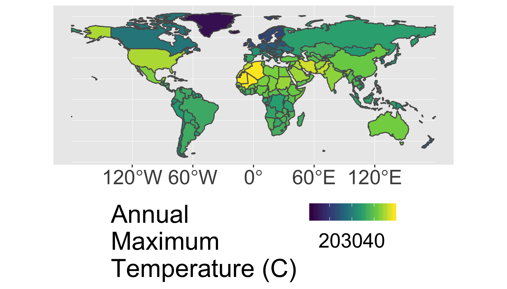

Raster Data
The hottest country on each continent.
2018-10-04
Reading
- Raster Vector Interactions GCR
Background
The raster data format is commonly used for environmental datasets such as elevation, climate, soil, and land cover. We commonly need to extract the data from raster objects using simple features (vector objects). For example if you had a set of points you collected using a GPS and wanted to know the mean annual temperature at each point, you might extract the data from each location in a raster-based map of temperature.

You could also be interested in some summary of the raster data across multiple pixels (such as the buffered points above, a transect, or within a polygon). For example, you might be interested in the mean elevation within the entire polygon in the above figure.
In this case study we’ll work with a timeseries of temperature data from WorldClim. These are near-global rasters of various climatic variables available at several resolutions. For convenience, we’ll work with the very coarse data (0.5 degree, which is about 50km), but much finer data are available (~1km).
Objective
Identify the hottest country on each continent (not counting Antarctica) by intersecting a set of polygons with a raster image and calculating the maximum raster value in each polygon.
Tasks
- Calculate annual maximum temperatures from a monthly spatio-temporal dataset
- Remove Antarctica from the
worlddataset - Summarize raster values within polygons
- Generate a summary figure and table.
- Save your script as a .R or .Rmd in your course repository
Download starter R script (if desired)
The details below describe one possible approach.
Libraries
You will need to load the following packages
library(raster)
library(sf)
library(sp)
library(spData)
library(tidyverse)Loading the spData() package may return a warning: To access larger datasets...install spDataLarge.... This is not required - you can use the standard lower resolution files and safely ignore this message.
Data
data(world) #load 'world' data from spData package
tmax_monthly <- getData(name = "worldclim", var="tmax", res=10)Steps
- Prepare country polygon data (the
worldobject).- Remove “Antarctica” with
filter()because WorldClim does not have data there. - Convert the
worldobject tospformat (the ‘old’ format) because therasterpackage doesn’t acceptsfobjects. you can do this withas(world,"Spatial").
- Remove “Antarctica” with
- Prepare Climate Data
- Download and load the WorldClim maximum temperature dataset at the lowest resolution (10 degrees) using the code above (
tmax_monthly=getData(...)). - Inspect the new
tmax_monthlyobject (you can start by just typing it’s nametmax_monthly, then perhaps making aplot()). How many layers does it have? What do these represent? What are the units? You can read more about the data here - Set the appropriate
gain()to convert to Degrees C. You can figure this out using information found here and?gain(). What value do you need to multiply with the data to get degrees C? - Create a new object called
tmax_annualthat is the annual maximum temperature in each pixel of the raster stack usingmax(). This will find the maximum temperature in each location across all months. - Use
names(tmax_annual) <- "tmax"to change the name of the layer in the newtmax_annualobject totmax. This makes the later code more intuitive than keeping the default namelayer.
- Download and load the WorldClim maximum temperature dataset at the lowest resolution (10 degrees) using the code above (
- Calculate the maximum temperature observed in each country.
- use
raster::extract()to identify the maximum temperature observed in each country (fun=max). Also setna.rm=T, small=T, sp=Tto 1) handle missing data along coastlines, 2) account for small countries that may not have a full 0.5 degree pixel in them, and 3) return a spatial polygon object instead of just a vector of values. - convert the results of the previous step to
sfformat withst_as_sf(). Now you have an updated polygon object with a new column of maximium temperature. Cool!
- use
- Communicate your results
- use
ggplot()andgeom_sf()to plot the maximum temperature in each country polygon (not the original raster layer) - use
dplyrtools to find the hottest country in each continent. You may needgroup_by()andtop_n. To create a nice looking table, you may also want to useselect()to keep only the desired columns,arrange()to sort them,st_set_geometry(NULL)to drop the geometry column (if desired).
- use
Your final result should look something like this:

And the summary table will look like this:
| name_long | continent | tmax |
|---|---|---|
| Algeria | Africa | 48.9 |
| Iran | Asia | 46.7 |
| United States | North America | 44.8 |
| Australia | Oceania | 41.8 |
| Argentina | South America | 36.5 |
| Spain | Europe | 36.1 |
| French Southern and Antarctic Lands | Seven seas (open ocean) | 11.8 |
Note that these data are based on 0.5 degree resolution data and thus will miss small hot places and cannot be directly compared with station-based data.
Build a leaflet map of the same dataset.